Qualitative Results
Visual Hull Improvement with the Visible Domain Constraint
As the minimum visibility threshold K increases, the visible domain tightens, carving out more ambiguous space. The traditional visual hull (K=1) retains large, poorly-constrained regions; VisDom at K=3 yields a compact, reliable shape.
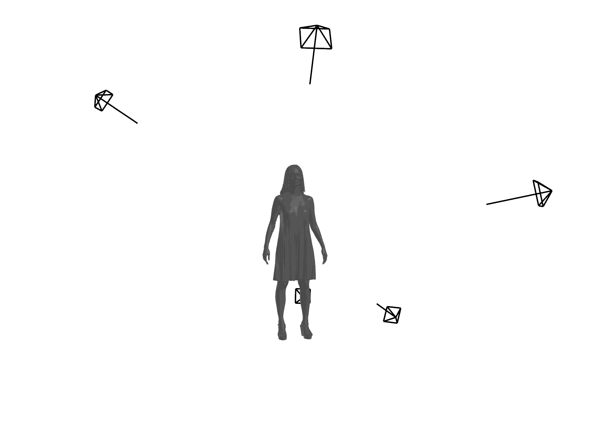
Domain
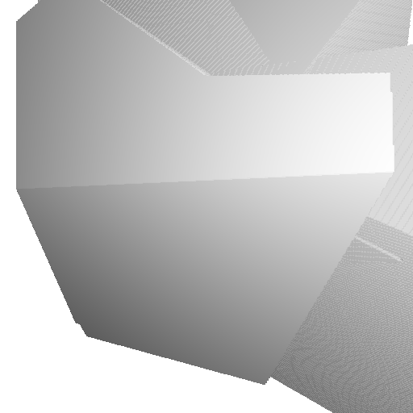
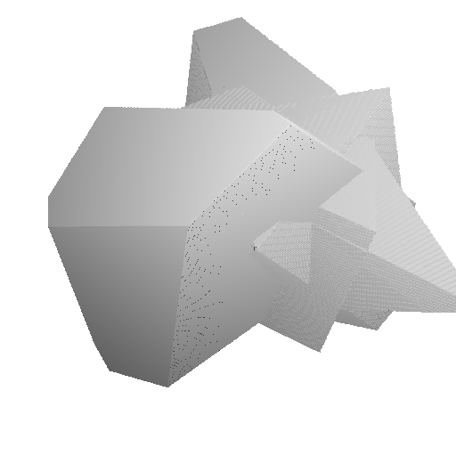
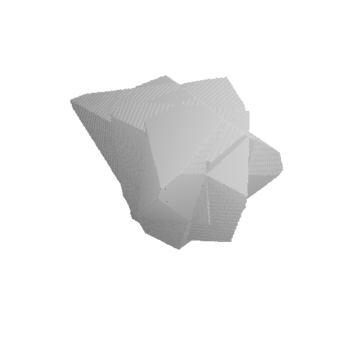
Hull
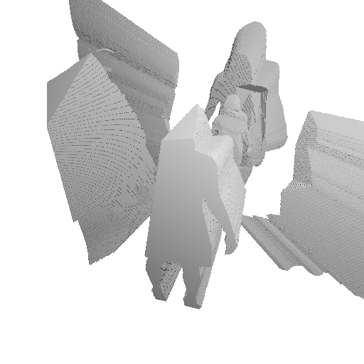
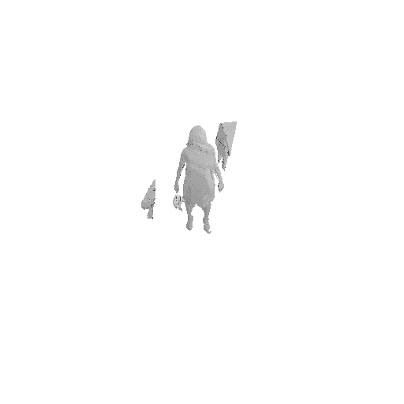
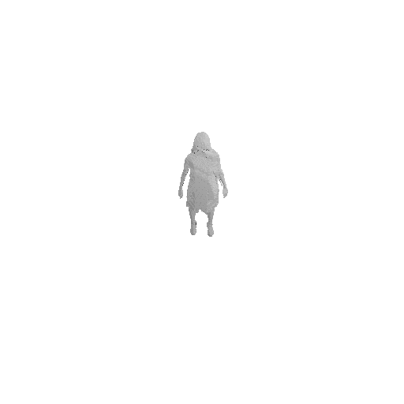
Top row: the visible domain (region jointly observed by at least K cameras) shrinks as K increases. Bottom row: the resulting visual hull becomes progressively tighter and more accurate. The traditional hull (K=1) is overly permissive; VisDom at K=3 carves out all ambiguous space.
ZipNeRF: Silhouette Mask vs. VisDom Constraint
Adding a silhouette mask loss alone is insufficient — and sometimes harmful — at low camera counts. VisDom restricts ray sampling to the jointly-visible region, enabling faithful reconstruction from very few views.

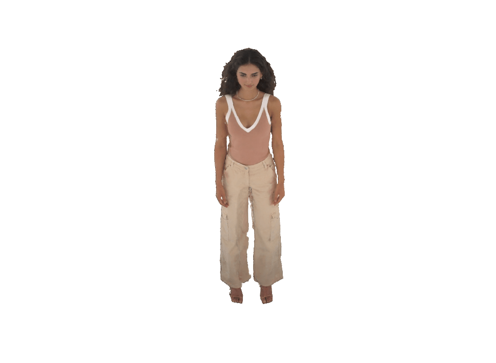

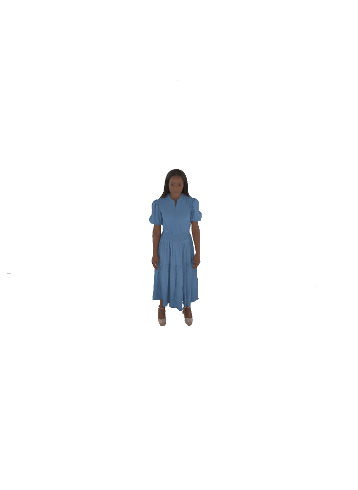

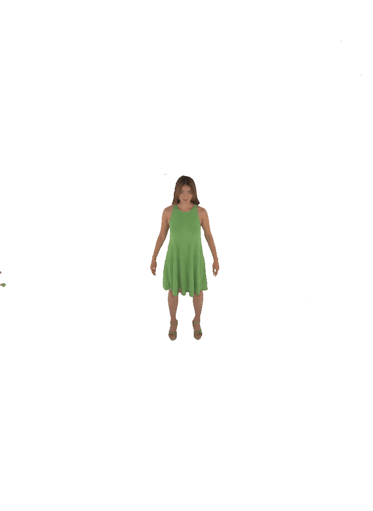
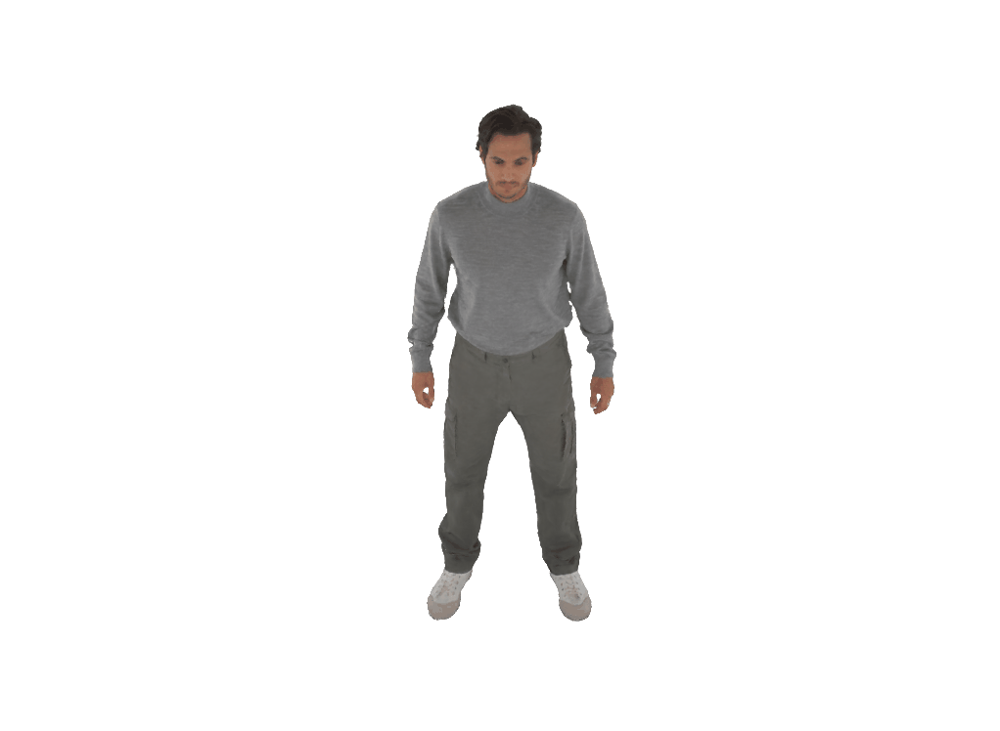
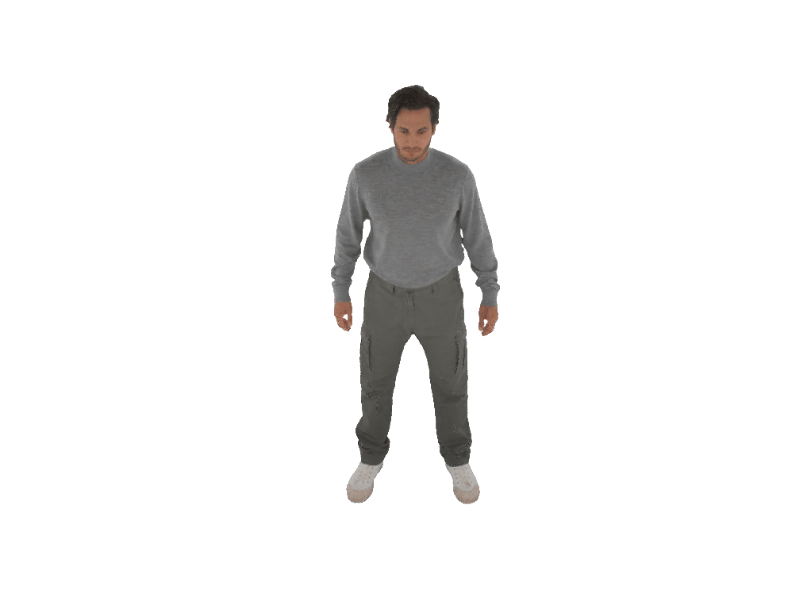
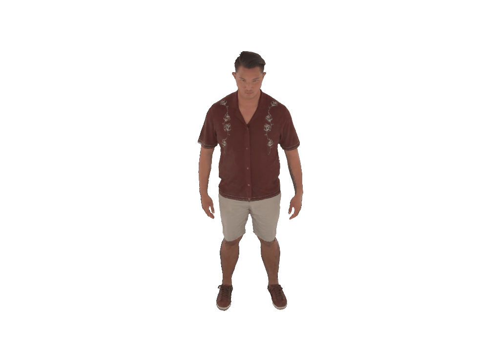
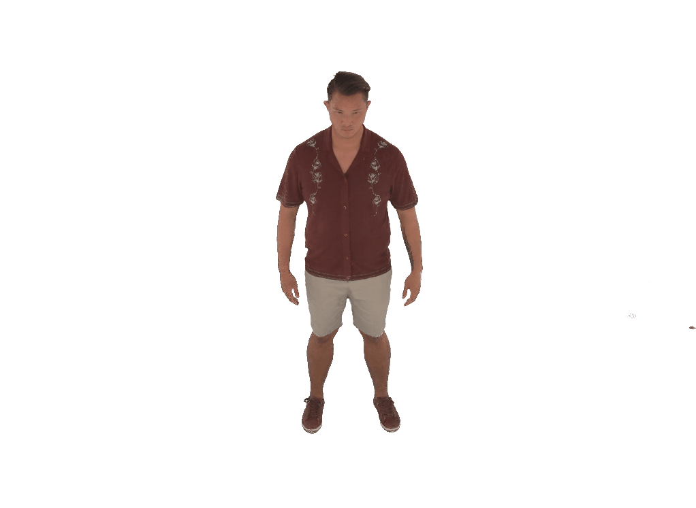
Each pair shows a 360° render from ZipNeRF trained with silhouette mask only (left) vs. with VisDom (right). Floaters and geometry collapse are eliminated by VisDom across all camera counts.
3DGS-GO: Vanilla vs. VisDom Constraint
VisDom guides Gaussian placement during optimization, suppressing floaters that 3DGS-GO places in ambiguous free space. The improvement is most pronounced at 4 cameras and remains consistent as coverage increases.
360° renders from 3DGS-GO (left) vs. 3DGS-GO + VisDom (right) at 4, 6, and 9 input cameras. VisDom removes Gaussian floaters by restricting placement to the jointly-visible domain.